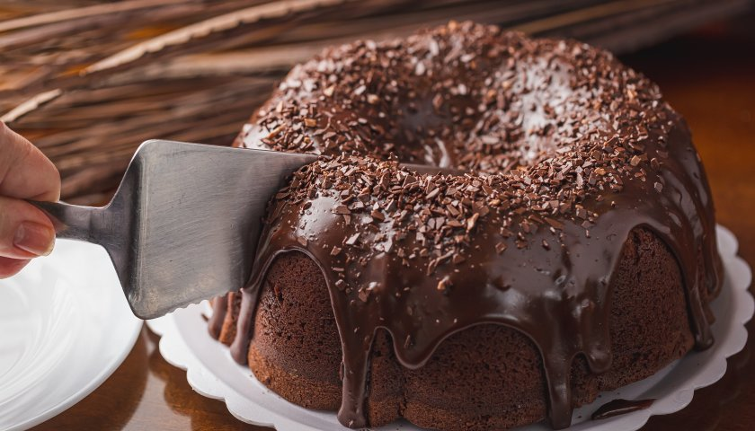

Bolo de Chocolate

Ingredientes
Massa
4 ovos
1 xícara de óleo
1 xícara de água morna
1 xícara de farinha de trigo
1 xícara de chocolate / cacau em pó
1 colher de fermento em pó
1 xícara de açúcar
Cobertura
8 colheres de chocolate ou cacau em pó
4 colheres de margarina
1 lata de leite condensado
Modo de preparo
Massa
Bata as claras em neve e separe
Em outra vasilha bata as gemas com o açúcar
Em seguida acrescente a farinha e trigo e bata na batedeira em velocidade alta por 3 minutos
Acrescente o fermento em pó aos poucos
Acrescente a clara em neve até ficar totalmente envolvida na massa
Asse em 180° por 50 minutos.
Cobertura
Misture a margarina com o chocolate em pó e leite condensado
Cozinhe por aproximadamente 3 minutos
Desligue e despeje imediatamente sobre o bolo.
Receita original no youtube da Letícia Sweet Cake